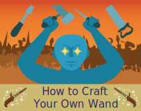
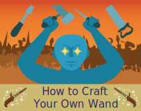

How to be a Magician
Step 4: Don't Skip Steps
DONT. EVEN. THINK. ABOUT. IT. If you try such a stunt, you will regret it...
If such a step wasn't necessary, it wouldn't have been written down in the first place. But because it is necessary, it was written down. Spells are a very delicate practice in the world of Arcadia and require your full attention and focus. Spells and potions require exact measurements, exact ingredients, exact timing and setting for the sole purpose of being successful. If you put 30 grams of Glacius scales instead of 32 while trying to summon a Glacius, you may end up summoning a yeti instead. And such directions and supplies require more accuracy the stronger the spell is or effective the potions is.
To make sure not to skip steps, label your steps. Use different color highlighters in the instruction manuals to organize each step. Also circle exact measurements in red ink or glitter pens so they pop out to you more. Place sticky notes onto pages that have certain measurements of ingredients to prepare them beforehand. In most Arcadia academies projects have 4 weeks to be completed since initially assigned, so don't procrastinate and prepare everything you will need so you don't blow up the classroom.
 
